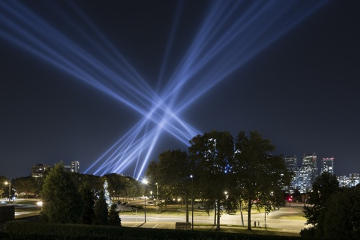

Open Air - Rafael Lozano-Hemmer (2012)
Rafael Lozano-Hemmer's Shadow Box “Open Air” (Relational Architecture 19) was an interactive art installation designed to transform Philadelphia’s historic Benjamin Franklin Parkway, between September 20 and October 14, 2012. In this project, twenty four powerful searchlights created unique, dynamic light formations in the sky which reacted to voice messages sent by participants using a free mobile app and this website. The public was invited to record and submit messages of up to 30 seconds in length — shout-outs, poems, songs, rants, dedications, proposals. As the messages played back in Philadelphia, the lights reacted in brightness and position to the frequency and amplitude of the voice recordings, which could be heard through the mobile app, the website and public speakers located at the Project Information Center at Eakins Oval (24th Street and the Parkway).